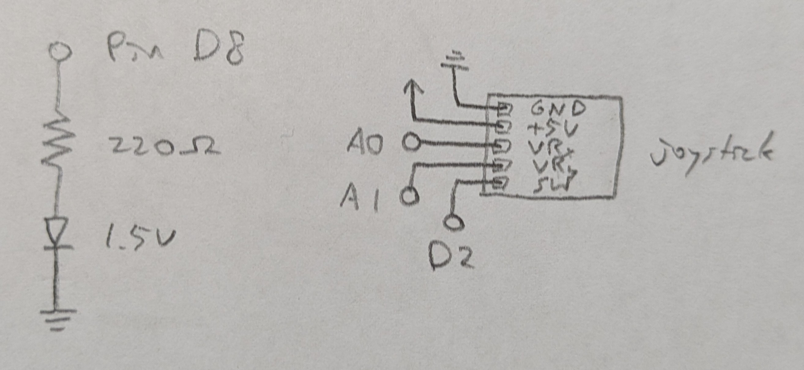
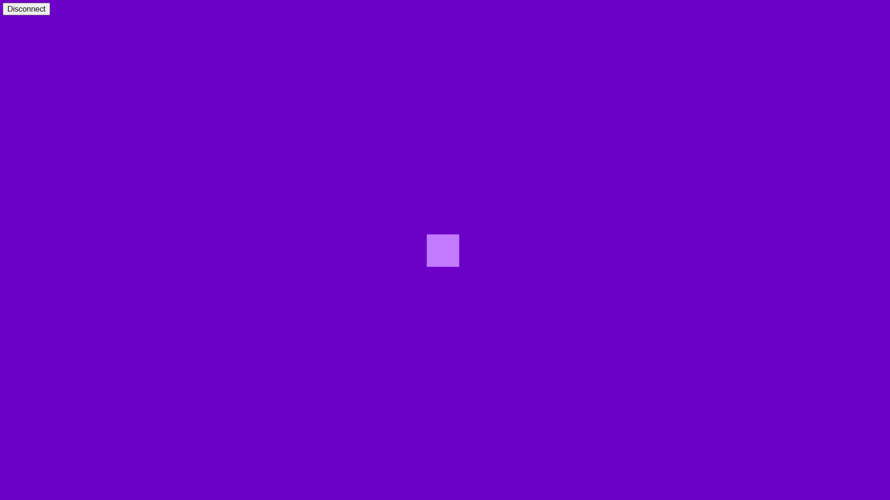
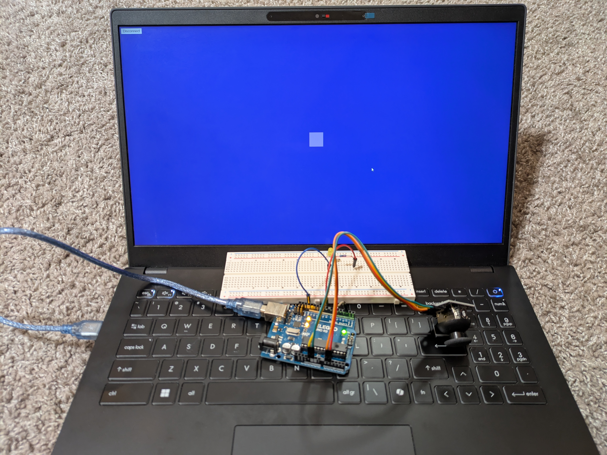

Requirements
- uses p5.js and webserial
- web device input causes arduino output
- arduino input causes web device output
- 2 sources of input and 1 output device
Schematic
Calculations
Resistance needed for yellow LED:

Circuit

Firmware
link to code file
/*
Web
with help from servo-with-gui by Blair Subbaraman
Prints 3 input values (X, Y, switch) from the joystick to serial output.
Reads a boolean 1 or 0 from serial input to turn on or off the output device.
The joystick is connected to X pin A0, Y pin A1, switch pin 2.
The output device is connected to pin 7.
2025 November 18
Heidi Wang
*/
// pin for joystick X input
int xPin = A0;
// pin for joystick Y input
int yPin = A1;
// pin for joystick switch input
int switchPin = 2;
// pin for output device
int outputPin = 8;
// runs once
void setup() {
// begin serial communication
Serial.begin(9600);
// provide power to the switch to allow it to begin working
digitalWrite(switchPin, HIGH);
// initialize the output pin as output
pinMode(outputPin, OUTPUT);
}
// repeats indefinitely
void loop() {
// write the x value from the joystick
Serial.print(analogRead(xPin));
// write a comma to delimit values
Serial.print(",");
// write the y value from the joystick
Serial.print(analogRead(yPin));
// write a comma to delimit values
Serial.print(",");
// write the switch value from the joystick and a \n char to complete a transmission
Serial.println(digitalRead(switchPin));
// if there's serial data
if (Serial.available() > 0) {
// read it
int val = Serial.read();
// use it to update the output pin
if (val==1) {
digitalWrite(outputPin, HIGH);
}
if (val==0) {
digitalWrite(outputPin, LOW);
}
}
// delay between actions
delay(50);
}
Web
Web Code
link to code file
/*
index.js for Web
with help from index.js for servo-with-gui by Blair Subbaraman
Reads 3 input values (X, Y, switch) from serial.
X and Y move the target in a direct mapping.
Pressing the button (closing the switch) hides the target.
Mousing over the target (i.e. when it is visible) writes a boolean 1 or 0 output to serial.
2025 November 18
Heidi Wang
*/
// this should match the baud rate in your Arduino sketch
const BAUD_RATE = 9600;
// these are used for setting up the serial connection
let port, connectBtn;
// storing the last value sent to Arduino
let lastVal = false;
// keeping track of the angle to send to Arduino
let currVal = false;
// reading data back in from Arduino
let [xRead, yRead, switchRead] = [0,0,0];
// runs once
function setup() {
// Run our serial setup function (below)
setupSerial();
// Create a canvas that is the size of our browser window.
// windowWidth and windowHeight are p5 variables
createCanvas(windowWidth, windowHeight);
}
// repeats indefinitely
function draw() {
// read any data coming in from Arduino
receiveData();
// draw background a medium purple
background(109, 0, 198);
// if button is not pressed
if (switchRead) {
// set the target size
let size = 56;
// map the input x value on the analog pin read scale of 0-1023 to an x value to draw scaled to the window width
let xDraw = int(map(xRead, 0, 1023, 20, windowWidth-size-20));
// map the input y value on the analog pin read scale of 0-1023 to a y value to draw scaled to the window height
let yDraw = int(map(yRead, 0, 1023, 20, windowHeight-size-20));
// set the fill color to a light purple
fill(195, 122, 255);
// remove stroke color and width
noStroke();
// draw the target as a square
rect(xDraw, yDraw, size);
// if mouse is over the target
if (xDraw <= mouseX && mouseX <= xDraw+size && yDraw <= mouseY && mouseY <= yDraw+size) {
// set value to send to Arduino as true
currVal = true;
// else mouse is not over target
} else {
// set value to send to Arduino as false
currVal = false;
}
// display values - uncomment for debugging
displayHUD(xDraw, yDraw);
// if button is pressed
} else {
// set value to send to Arduino as false
currVal = false;
// display values - uncomment for debugging
displayHUD(-1, -1);
}
// send data out to the Arduino
// if the value has changed since it was last sent
if (lastVal != currVal) {
// log a console message to show that we are writing to port
console.log('writing', currVal, 'to port');
// write the true/false value to the Arduino as a number 0/1
port.write(Number(currVal));
// update the last value sent for tracking whether the value has changed
lastVal = currVal;
}
}
// displays values - used for debugging
function displayHUD(xDraw, yDraw) {
// set the fill color to a dark purple
// fill(92, 0, 168);
// remove stroke color and width
// noStroke();
// draw a rectangle as the background for the HUD
// rect(80, 60, 240, 370);
// set the fill color to a light purple (lighter than the target color)
fill(220, 178, 255);
// p5 text settings. BOLD and LEFT are constants provided by p5.
// See the "Typography" section in the p5 reference: https://p5js.org/reference/
textFont("system-ui", 50);
textStyle(BOLD);
textAlign(LEFT);
textSize(22);
// values drawn on the screen
text(`Last Value: ${lastVal}`, 100, 100);
text(`Current Value: ${currVal}`, 100, 150);
text(`Switch Read: ${switchRead}`, 100, 200);
text(`X Read: ${xRead}`, 100, 250);
text(`Y Read: ${yRead}`, 100, 300);
text(`X Draw: ${xDraw}`, 100, 350);
text(`Y Draw: ${yDraw}`, 100, 400);
}
function receiveData() {
/**
* Receive data over serial from your Arduino
* We're terminating data with a newline character here
* i.e., we need to Serial.println() in our Arduino code
*/
// Check whether the port is open (see checkPort function below)
const portIsOpen = checkPort();
// If the port is not open, stop drawing for this run of the loop
if (!portIsOpen) return;
// Read from the port until the newline
let str = port.readUntil("\n");
// If we didn't read anything, stop drawing for this run of the loop
if (str.length == 0) return;
// Trim the whitespace (the newline) and split on commas.
[xRead, yRead, switchRead] = str.trim().split(",");
// Convert the strings to numbers.
[xRead, yRead, switchRead] = [Number(xRead), Number(yRead), boolean(Number(switchRead))];
}
// Three helper functions for managing the serial connection.
function setupSerial() {
port = createSerial();
// Check to see if there are any ports we have used previously
let usedPorts = usedSerialPorts();
if (usedPorts.length > 0) {
// If there are ports we've used, open the first one
port.open(usedPorts[0], BAUD_RATE);
}
// Create a connect button
connectBtn = createButton("Connect to Arduino");
// Position the button in the top left of the screen.
connectBtn.position(5, 5);
// When the button is clicked, run the onConnectButtonClicked function
connectBtn.mouseClicked(onConnectButtonClicked);
}
function checkPort() {
if (!port.opened()) {
// If the port is not open, change button text
connectBtn.html("Connect to Arduino");
// Set background to gray
background("gray");
return false;
} else {
// Otherwise we are connected
connectBtn.html("Disconnect");
return true;
}
}
function onConnectButtonClicked() {
// When the connect button is clicked
if (!port.opened()) {
// If the port is not opened, we open it
port.open(BAUD_RATE);
} else {
// Otherwise, we close it!
port.close();
}
}
Full Project
Operation
Questions
None